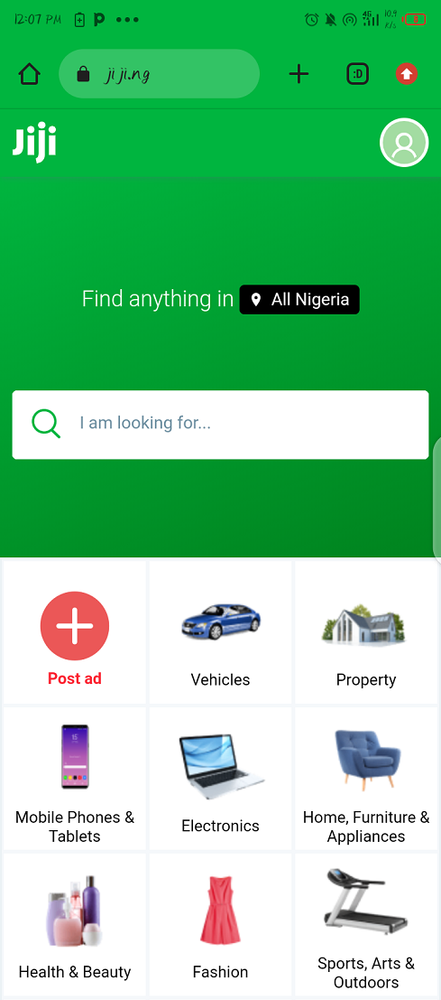

Design Principles Document
Ogboanoh Richard
Fitt's Law
Spotify
Spotify's Website
Fitt's lawbasically explains that the longer the distance and the smaller the target's size, the longer it takes to get results. Using a color like black that contrasts greatly with the background and making the buttons large enough, spotify, through the design can guide the viewer to that part of the page and enhance the experience.
Hick's Law
Jiji
Jiji's Website Hick's law, put simply, means the less time a user spends finding what he/she want the more convinient the user is. Jiji uses Hick's Law in their website which gives users the oppurtunity to narrow down their selections as they shop. This is evident on the webpage's dashboard, the specialized menus which allows a customer to choose what they want. As online shopping has become increasingly more common, the website wants to be able to allow the customer to feel as if they are shopping in the convenience of their own home, yet not overwhelming the customer with many different and unrelated options at once
Visual Hierachy
Family Search
Family Search WebsiteVisual Hierachy consists of arranging elements to show importance. The elements are laid out strategically and logically to guide users to desired locations. Here we can see that family search starts with a little boy holding a pciture of one of his ancestors, who looks a lot like the little boy when he was his age. The website continues with a heading that explains the whole point of the image.